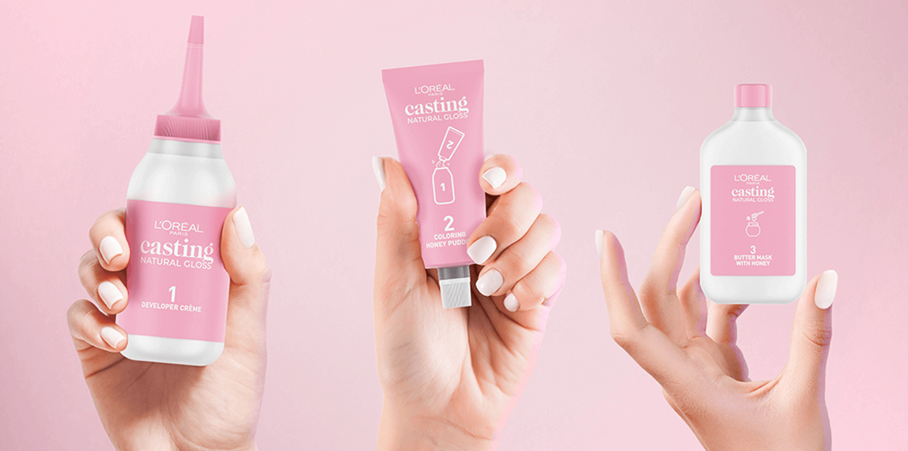

Naturalny blask,
zero dramy
Jesteś tego warta.
Występuje Camilla Cabello
DOstępna w 9 odcieniach.
*Ilustracja wyników po aplikacji w normalnych warunkach - wyniki mogą się różnić.
Podkręć swój naturalny kolor włosów z nowym Casting Natural Gloss!

Pierwsza* koloryzacja zawierająca 90% składników pochodzenia naturalnego
superlśniący kolor bez amoniaku
Poznaj casting natural gloss
Szukasz naturalnie wyglądającego, lśniącego koloru, który pokryje
pierwsze siwe włosy?
Odkryj Casting Natural Gloss! Delikatna
formuła, wzbogacona składnikami pielęgnującymi, nadaje włosom blask i
zdrowy wygląd, a odzywka z miodem zapewnia odżywienie i wygładzenie.
To idealna pierwsza koloryzacja, która podkreśli naturalne piekno
Twoich włosów.
Innowacyjna formuła zasilana zieloną nauką
Sekretem naturalnie wyglądających, lśniących włosów z jednoczesnym optymalnym pokryciem siwych pasm jest połączenie 90% naturalnych składników z 10% barwników, aktywatorów i składników ochronnych. Casting Natural Gloss to niesamowity rezultat koloryzacji połączony z przyjemnością stosowania.
lśniący
kolor
Formuła Casting Natural Gloss łączy zalety natury z potęgą nauki. Jest odpowiednia dla wszystkich rodzajów i struktur włosów, a refleks 23 łączy ciepłe oraz chłodne tony, dając naturalny efekt. Pielęgnacyjne składniki nadają włosom miękkie, jedwabiste wykończenie dla zdrowo wyglądających, odżywionych włosów, pełnych lśniących refleksów.
Naturalny
efekt bez utraty skuteczności
Casting Natural Gloss oferuje naturalny rezultat kolorystyczny oraz 3x bardziej lśniące* i 3x bardziej jedwabiste włosy* dla jeszcze bardziej satysfakcjonujących efektów. Kolor delikatnie zanika powracając do naturalnego odcienia i utrzymuje się do 28 myć**, dzięki czemu pozwala uniknąć powstawaniu odrostów.
Łatwa aplikacja
Casting Natural Gloss jest łatwy i intuicyjny w użyciu nawet dla początkujących. Dzięki wygodnemu aplikatorowi koloryzacja jest prosta i zajmuje zaledwie 20 min, a odżywka z miodem zapewnia przyjemny zapach podczas koloryzacji.
Zobacz jakie to proste
Sprawdź jak wykonać koloryzację casting natural gloss
poznaj wszystkie odcienie
Casting natural creme gloss